Listen
On streaming
Nadav's album Songs for Empathy (2023) and Playground Trio's A Sign of Life (2024).
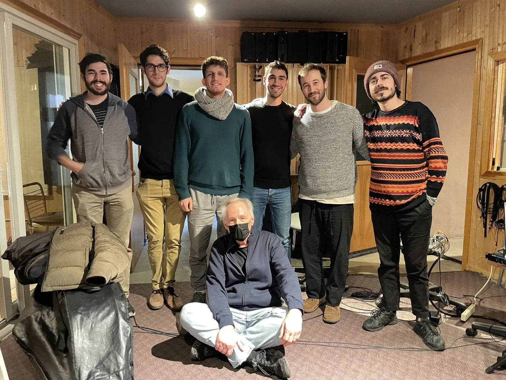
Photos by Francesco Gargiulli, Yuval Gur, Taylor Rossi and Susana Jiménez
Gallery

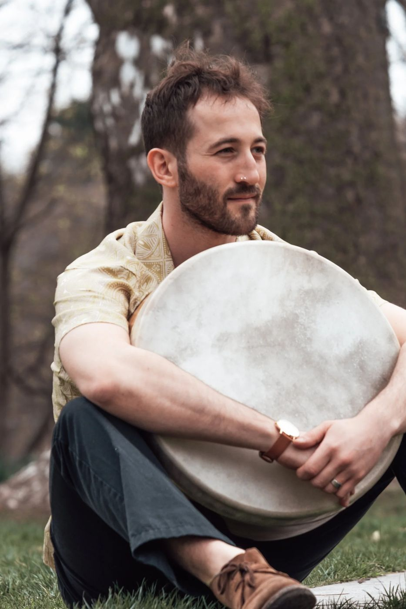
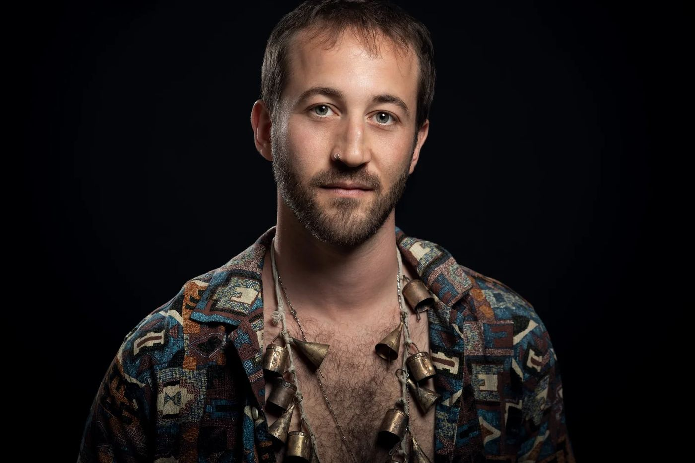

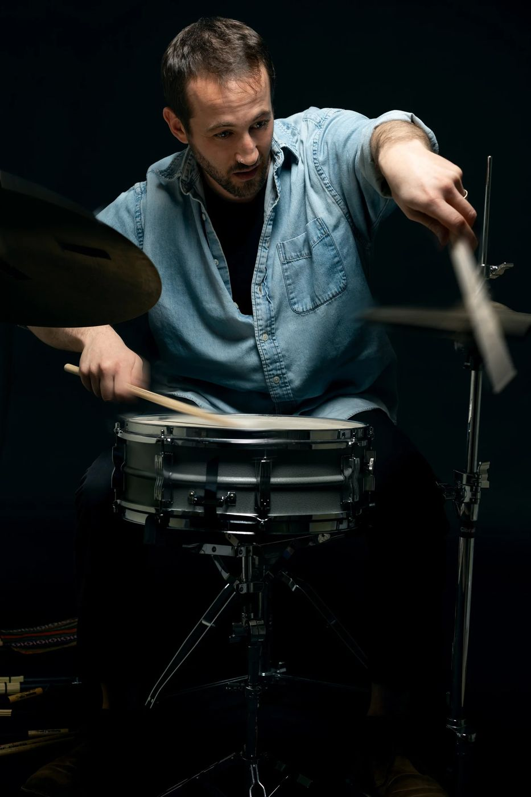
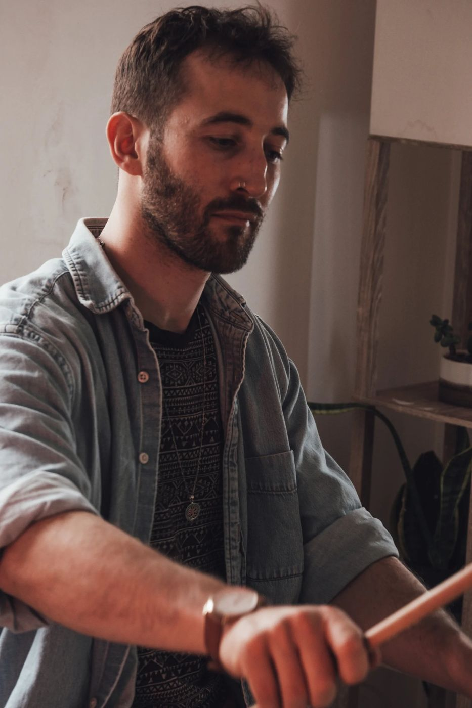
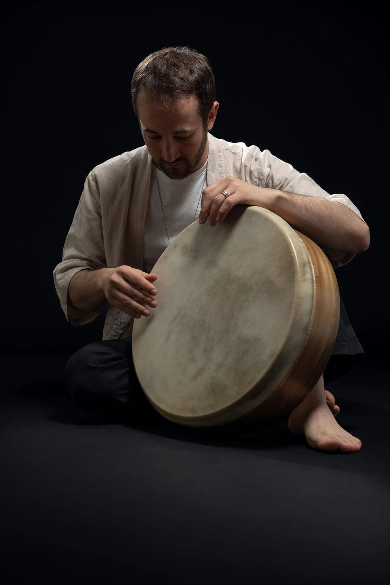
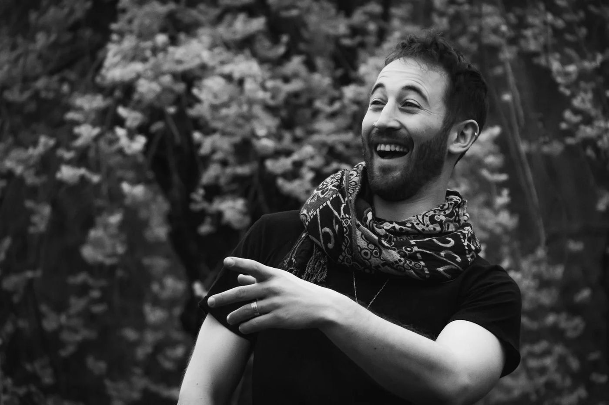
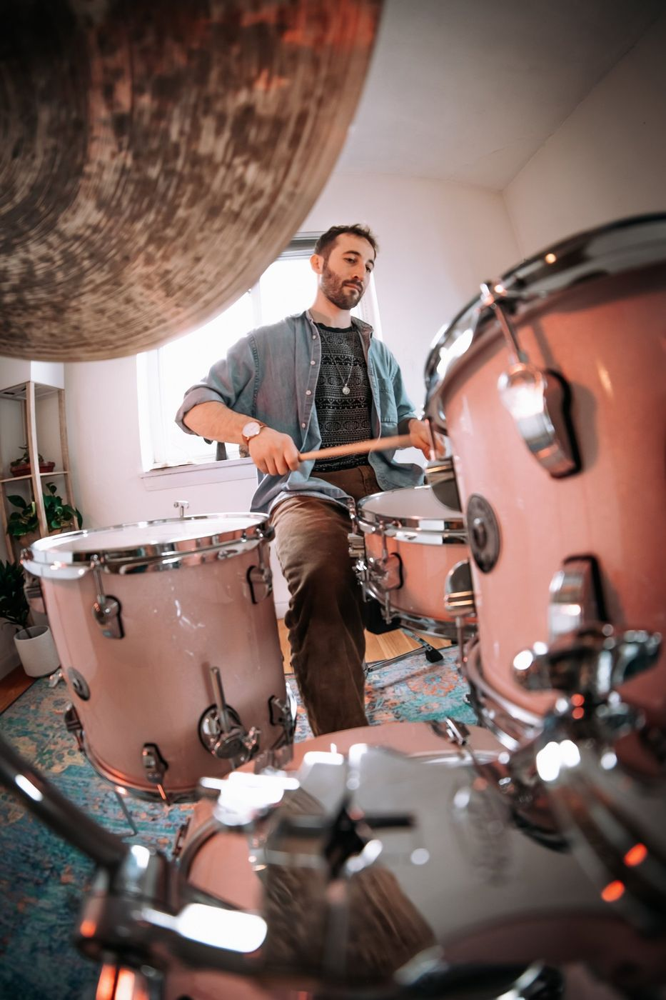

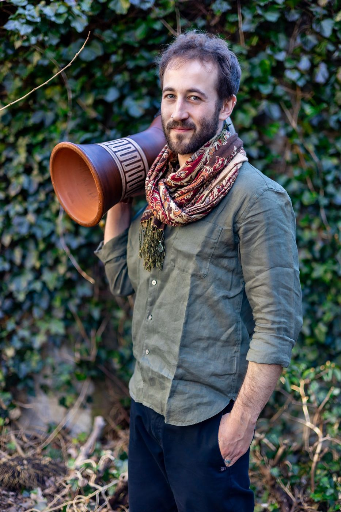


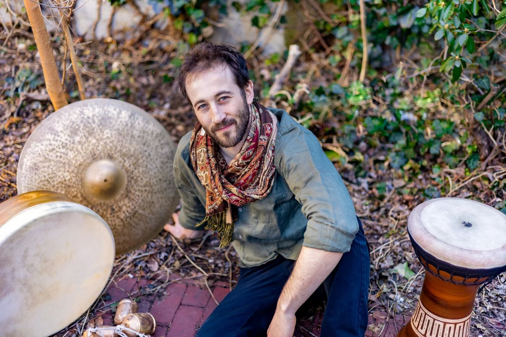
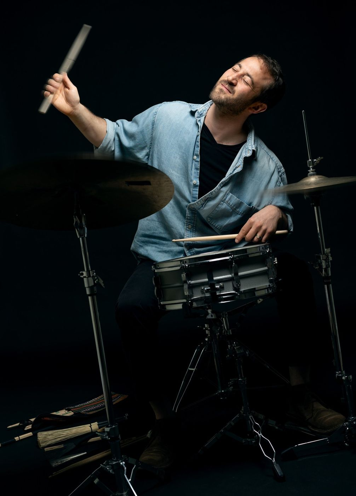

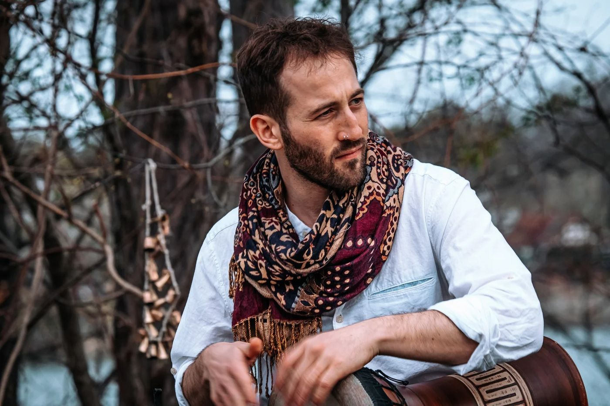
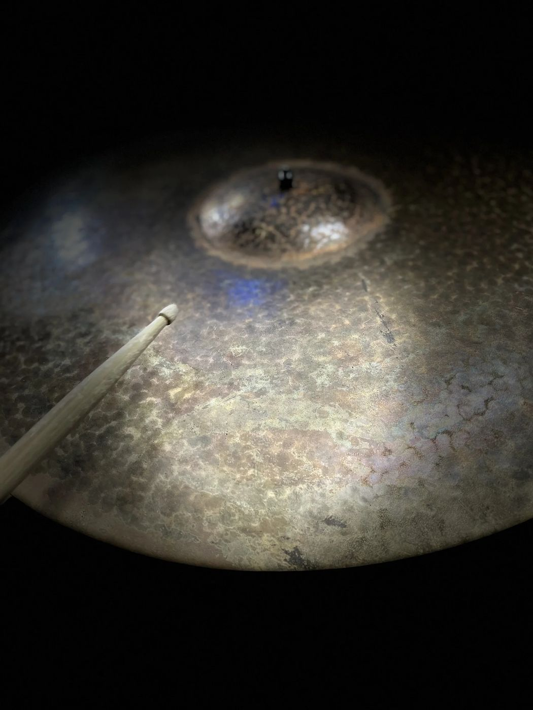